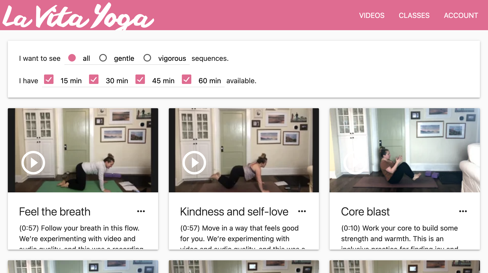

La Vita Yoga is a streaming video web application for a yoga studio in Durham, North Carolina. It was built to respond to the COVID-19 pandemic and help the studio move online.

As the product lead, I developed the application to meet two primary user needs:
Early user feedback:
TransLoc OnDemand is an administrative application that powers the “microtransit” portion of the TransLoc mobile application. In this system transit riders book trips through the TransLoc mobile application, which TransLoc processes and dispatches to public transit agency vehicle drivers.
As a product manager, my focus was on improving the rider experience for the existing applications. I worked with public transit agency buyers to understand their trip scheduling needs (balancing wait times with the number of vehicles in service). Then, I clustered rider/user feedback from the mobile application (thousands of users) to prioritize their concerns.
As part of a cross-functional product team of software engineers and product designers, we used these inputs to iteratively develop multiple consumer-facing capabilities, including: